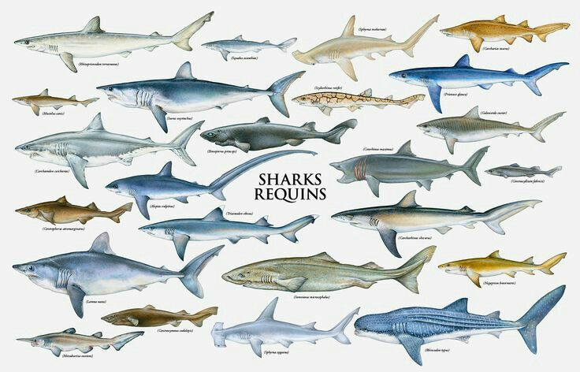

So, what are Semantic elements? HTML semantic elements describe its meaning to
the browser and developer. It tells us about its contents.
Semantic elements have a few things going for them. They are:
Accessible: they help assistive technologies and developers read and interpret a webpage.
Searchable: they help computers make sense of the content.
Internationalized: they help non-English speakers understand the document.
Interoperable: they help other developers understand the structure of the page.
When building a webpage, developers use a combination of HTML, CSS, and JavaScript. HTML is used
for the basic outline; the organization and content of a webpage. I like to think of it as the
foundation of a webpage. The semantic elements are what is used to build this foundation.
They are the base layer; the contents of a webpage. CSS and JavaScript is used on top it
to make the webpage “prettier”.
Now for something unrelated to semantic elements
5 Random facts about sharks
There are over 1,000 species of sharks and rays, with new species discovered every year.
On average, there are 16 shark attacks per year in the US.
And on average, only 1 of these attacks result in death.
The largest living species is the Whale shark, coming in at 18 meters.
The smallest living species is the dwarf lanternshark, it can fit in a human hand.

fig 1. shown here are the side profiles of a few different shark species.